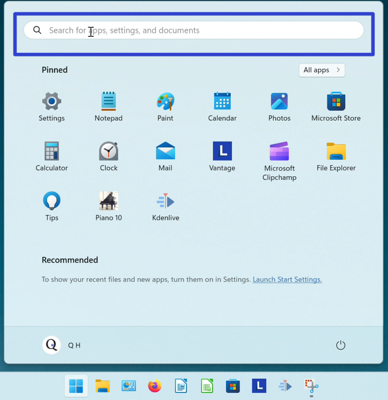

How to Open the Microsoft Notepad App (Windows 11)
This tutorial covers:
No time to scroll down? Click through this tutorial presentation:
Watch a video tutorial:
What is Notepad?
Notepad is a basic text editor that comes with Windows 11. This app creates text files for various applications, such as editing code or writing stories. Notepad can save files with UTF-8 encoding, and customize document headers and footers with special codes.
How to Open Notepad With Search
- Step 1: Go down to the taskbar and click the Start (four blue squares) button.

- Step 2: In the Start window that opens, click the top search bar and type “notepad”. 
- Step 3: On the search results screen, one of these buttons.

- Notepad opens.
Refer to these instructions later with this free PDF tutorial.